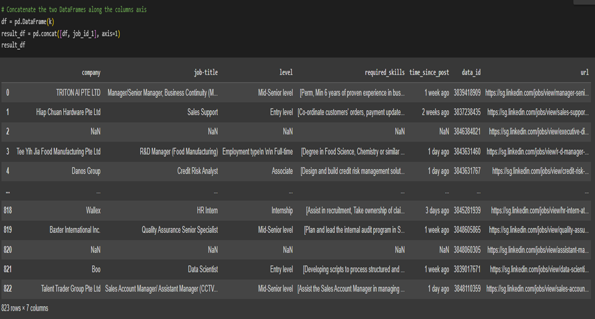
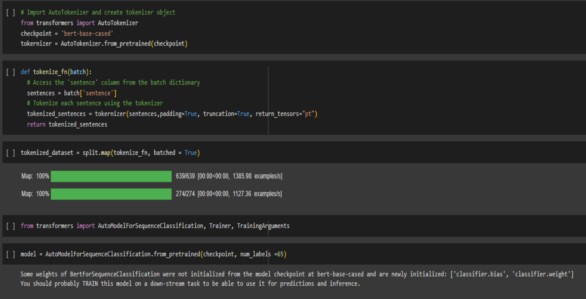
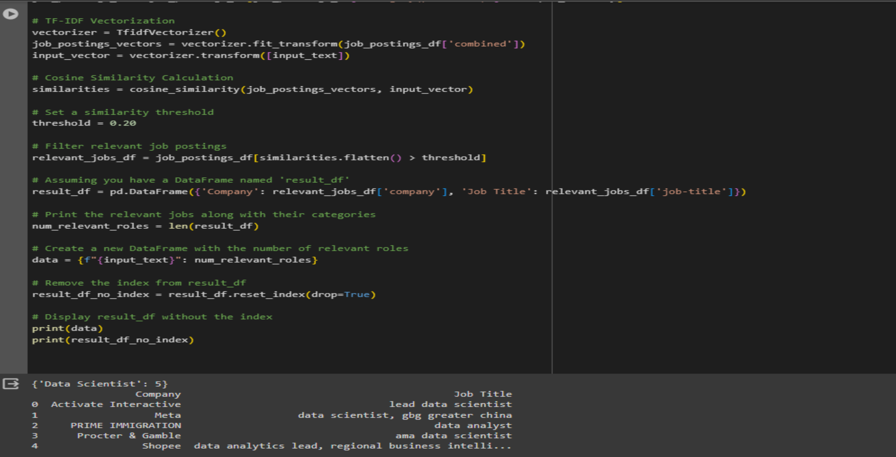

In the initial stages, 2 members were responsible for web scrapping job data from a popular job portal.
I used BeautifulSoup to scrape the data and stored it in a database.
Important metrics such as company, job titles, level of seniority, time posted, url are all stored in the database.
2. Preprocessing

I proceeded with preprocessing, where I cleaned the data, removed duplicates, and dropped unnecessary data that isn't relevant to our project. Although these data could be added in for future implementations.
3. Bert Classification

We used the BERT model to classify the job data into different industries. This is important as it allows us to recommend jobs to users based on their preferences.
The classification was done with pre-labelled data and we achieved a remarkable of 95% accuracy.
4. Job Recommendation

This will match the LLM's output to our job database where it will recommend relevant jobs depending on user's experiences and skillsets.
The matching process was deployed on Google Cloud for automation purposes.
5. Highlights!
Our team secured second runner-up in the finals!
I gained valuable technical and soft skills:
This was my first implementation of NLP model in a product development, and I also learned sales pitching and presenting our product to Googlers.
Once again, I am thankful for this opportunity and my teammates for this exciting 5-days hackathon journey!